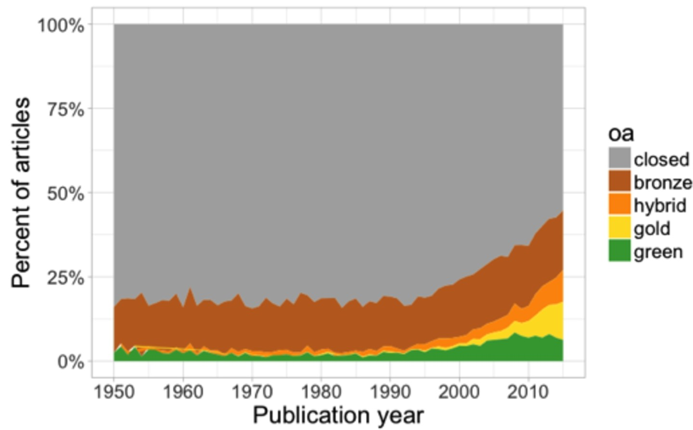
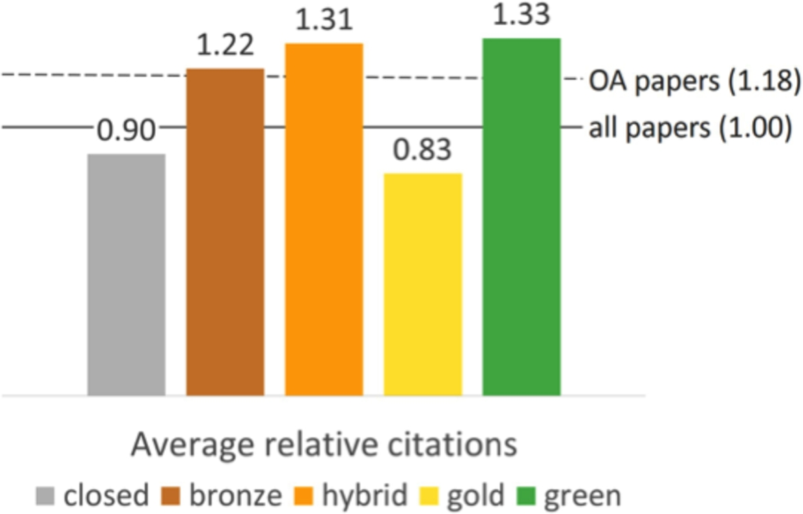
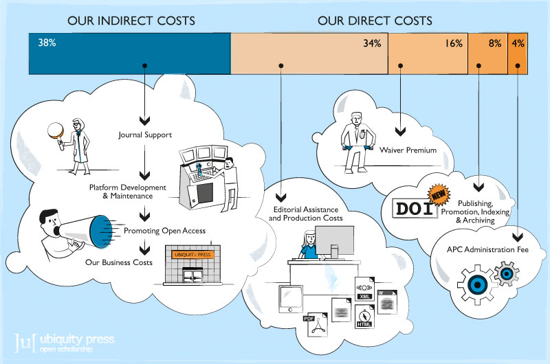
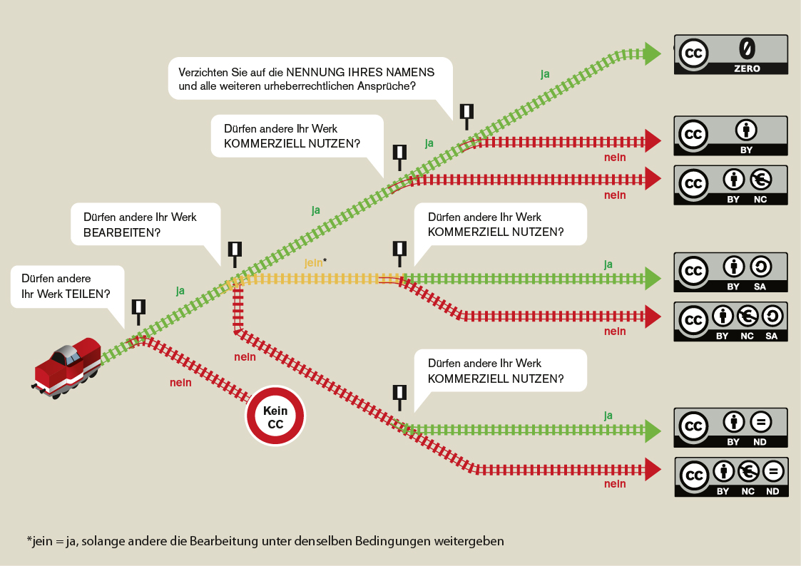

<!doctype html>
<html lang="en">
<head>
<meta charset="utf-8">
<!-- CUSTOMIZE THIS! -->
<title>Open Access</title>
<meta name="author" content="Christof Schöch">
<!-- END -->
<meta name="description" content="Slides">
<meta name="apple-mobile-web-app-capable" content="yes">
<meta name="apple-mobile-web-app-status-bar-style" content="black-translucent">
<meta name="viewport" content="width=device-width, initial-scale=1.0, maximum-scale=1.0, user-scalable=no, minimal-ui">
<link rel="stylesheet" href="css/reveal.css">
<link rel="stylesheet" href="css/theme/simple.css" id="theme">
<!-- Code syntax highlighting -->
<link rel="stylesheet" href="lib/css/zenburn.css">
<!-- Printing and PDF exports -->
<script>
var link = document.createElement( 'link' );
link.rel = 'stylesheet';
link.type = 'text/css';
link.href = window.location.search.match( /print-pdf/gi ) ? 'css/print/pdf.css' : 'css/print/paper.css';
document.getElementsByTagName( 'head' )[0].appendChild( link );
</script>
<!--[if lt IE 9]>
<script src="lib/js/html5shiv.js"></script>
<![endif]-->
</head>

<body>
<div class="reveal">
<div class="slides">
<section data-markdown="" data-separator="^\n-\n" data-separator-vertical="^\n--\n" data-separator-notes="^::" data-charset="utf-8" data-background-image="img/basics/uni-trier-icon.png" data-background-size="50px" data-background-position="top 10px right 10px">
<script type="text/template">

<!-- THIS IS WHERE THE CONTENT GOES! -->
<!-- Any section element inside of this container is displayed as a slide -->

##Was heißt und zu welchem Ende publiziert man im Open Access?
<hr/>
<br/>
Prof. Dr. Christof Schöch
<br/>
<br/>***Open Access Week 2020***
<br/>**Universitätsbibliothek Trier**
<br/>
<br/>Folien: https://christofs.github.io/publ/#/
<br/>Video: https://www.youtube.com/watch?v=9RQy4wtYls0
<br/>
<hr/>
</img>&nbsp;&nbsp;&nbsp;</img>


-
# Einleitung

--
## Ziele 
1. Das Verständnis für Open Access fördern <!-- .element: class="fragment" data-fragment-index="1" --> 
1. Dazu motivieren, selbst im Open Access zu publizieren <!-- .element: class="fragment" data-fragment-index="2" --> 
1. Aufzeigen, dass Open Access mehr ist als kostenloses Lesen <!-- .element: class="fragment" data-fragment-index="3" --> 
1. Aufzeigen, dass digitale Publikationen mehr sein können als PDF-Dateien <!-- .element: class="fragment" data-fragment-index="4" --> 


--
## Überblick
1. [Was ist mit Open Access gemeint?](#/2)
1. [Warum überhaupt Open Access?](#/3)
1. [Wie funktioniert Open Access?](#/4)
1. [Open Access für die Maschinen](#/5)
1. [Abschluss](#/6)

::
- Also einerseits: Was, Warum, Wie?
- Und dann noch speziell: OA für die Maschinen, wie nutzt man das Potential digitaler Medien omptimal?


-
# Was ist mit<br/>Open Access gemeint?

--
## Kontext Open Science


<small>
Bildquelle: Rachael Gallager et al., 2019, URL: [ResearchGate](https://www.researchgate.net/publication/332352194), [CC BY-SA](https://creativecommons.org/licenses/by-sa/3.0/)
</small>

::
- Open Access ist nur eine Komponente im Kontext Open Science 
- Diese Komponenten ergänzen und verstärken sich gegenseitig
- Insbesondere Open Data, Open Source, Open Access funktionieren im Verbund
- Hier spielen insbesondere Themen wie Reproduzierbarkeit und Nachhaltigkeit eine Rolle
- Darum soll es heute aber nicht gehen


--
## Open Access: Definition
><small>By 'open access' to this literature, we mean its free availability on the public internet, permitting any users to <span style="background-color:yellow">read, download, copy, distribute, print, search, or link</span> to the full texts of these articles, <span style="background-color:yellow">crawl</span> them for indexing, <span style="background-color:yellow">pass them</span> as data <span style="background-color:yellow">to software</span>, or use them for any other lawful purpose, without financial, legal, or technical barriers other than those inseparable from gaining access to the internet itself. The only constraint on reproduction and distribution, and the only role for copyright in this domain, should be to give authors control over the integrity of their work and the right to be properly acknowledged and cited.</small>

<small>
(Quelle: Budapest Declaration on Open Access, 2002, <br/>https://www.budapestopenaccessinitiative.org/read, CC BY)
</small>


--
## Open Content Definition (5R)
Mit OA-Lizenz publizierte Inhalte darf man:
* <!-- .element: class="fragment" data-fragment-index="1" --> **Retain** - herunterladen und abspeichern 
* <!-- .element: class="fragment" data-fragment-index="2" --> **Revise** - bearbeiten, annotieren, übersetzen 
* <!-- .element: class="fragment" data-fragment-index="3" --> **Remix** - zu Collage oder Korpus kombinieren
* <!-- .element: class="fragment" data-fragment-index="4" --> **Reuse** - analysieren oder im Unterricht einsetzen  
* <!-- .element: class="fragment" data-fragment-index="5" --> **Redistribute** - Bearbeitung weitergeben, veröffentlichen
<br/><br/>
<small>Quelle: http://opencontent.org/definition/</small> <!-- .element: class="fragment" data-fragment-index="5" --> 


::
* Wesentlich: Open Access ist viel mehr als "kostenfreier Zugang"!

--
## Welche Typen von Open Access gibt es?
* <!-- .element: class="fragment" data-fragment-index="1" --> <span style="background-color:gold">Gold OA: Originalveröffentlichung ist im OA verfügbar</span>
* <!-- .element: class="fragment" data-fragment-index="2" --> <span style="background-color:lightgreen">Grün OA: im OA verfügbar durch Zweitveröffentlichung in Repository</span>
* <!-- .element: class="fragment" data-fragment-index="3" --> <span style="background-color:#bf8970">Bronze: Originalveröffentlichung kostenlos verfügbar, aber ohne OA-Lizenz</span>
* <!-- .element: class="fragment" data-fragment-index="4" --> <span style="background-color:orange">Hybrid: Subskriptions-basierte Zeitschrift, aber einzelne Beiträge frei verfügbar</span>

::
- Gold: oft, aber nicht immer mit APC
- Grün: preprint, postprint, etwas unübersichtlich
- Bronze: praktisch, und weit verbreitet, aber nicht "echt" OA
- Hybrid: meist mit APC; "double dipping"?


--
## Wie verbreitet ist Open Access? 

<br/><br/><small>
Quelle: Piwowar et al. 2018, https://doi.org/10.7717/peerj.4375/fig-2, [CC BY](Licence: [CC BY](https://creativecommons.org/licenses/by/4.0/))
</small>

::
- Prozentual: insgesamt 28%, zuletzt um 45% OA (nur Artikel mit DOI!)
- In absoluten Zahlen: derzeit etwa 27 Millionen Artikel im OA (unpaywall)
- In den Geisteswissenschaften dürte das niedriger sein (nicht erfasst)
- Monographien sind hier nicht erfasst


-
# Warum überhaupt<br/>Open Access?

--
## Gute Gründe seit 2002
><small><span style="background-color:yellow">An old tradition and a new technology have converged to make possible an unprecedented public good</span>. The old tradition is the willingness of scientists and scholars to publish the fruits of their research in scholarly journals without payment, for the sake of inquiry and knowledge. The new technology is the internet. The public good they make possible is <span style="background-color:yellow">the world-wide electronic distribution of the peer-reviewed journal literature and completely free and unrestricted access</span> to it by all scientists, scholars, teachers, students, and other curious minds. Removing access barriers to this literature will accelerate research, enrich education, share the learning of the rich with the poor and the poor with the rich, make this literature as useful as it can be, and lay the foundation for uniting humanity in <span style="background-color:yellow">a common intellectual conversation and quest for knowledge</span>.</small>

<small>
(Quelle: Budapest Declaration on Open Access, 2002, <br/>https://www.budapestopenaccessinitiative.org/read, CC BY)
</small>

::
- Hier vor allem systematische und politische Gründe
- Ideal der „freien Zirkulation des Wissens“
- "Information wants to be free" (Stewart Brand)
- Öffentlich finanzierte Forschung sollte öffentlich verfügbar sein
- Aber gibt es auch handfeste praktische Vorteile?


--
## Gibt es einen "OA Citation Advantage"?

<br/><br/><br/><small>
Quelle: Piwowar et al. 2018, https://doi.org/10.7717/peerj.4375/fig-5, [CC BY](Licence: [CC BY](https://creativecommons.org/licenses/by/4.0/))
</small>

:: 
- Der Effekt dürfte sich zunehmend verstärken ("digital or invisible")
- Es ist umstritten, wie dieser Befund zu erklären ist
- Es könnte korrelierende Faktoren geben: 
- (A) früheres Erscheinen; 
- (B) Auswahl der besten Artikel für OA, etc.
- Aber auch andere Vorteile


--
## Weitere Vorteile von OA
OA-Publikationen: 
* können einfacher in der Lehre eingesetzt werden <!-- .element: class="fragment" data-fragment-index="1" -->
* werde auch außerhalb der "bubbles" wahrgenommen <!-- .element: class="fragment" data-fragment-index="2" -->
* erfüllen die Anforderung vieler Forschungsförderer (DFG, ERC, etc.) <!-- .element: class="fragment" data-fragment-index="3" -->
* können leichter gesammelt und quantitativ analysiert werden <!-- .element: class="fragment" data-fragment-index="4" -->
* zirkulieren schneller und fördern wiss. Erkenntnis (COVID-19!) <!-- .element: class="fragment" data-fragment-index="5" -->

::
- Wiss. Autor:innen möchten doch vor allem wahrgenommen werden
- Die rechtliche Situation zur Lehre ist viel zu kompliziert und beschränkend
- Außerhalb der bubbles: disziplinär gesehen; international gesehen;
- Analysen: für Fachgeschichte, Stand der Forschung, Wissenschaftssprache uvm.


-
# Wie funktioniert Open Access?

--
## Geschäftsmodelle
Wenn die Subskription entfällt, wer bezahlt dann?
* Article Processing Charges (bspw.: Oxford UP, PLoS) <!-- .element: class="fragment" data-fragment-index="1" -->
* Nationallizenzen (bspw. DEAL) <!-- .element: class="fragment" data-fragment-index="2" -->
* Konsortiale Modelle (bspw. OLH, arXiv) <!-- .element: class="fragment" data-fragment-index="3" -->
* Institutionelle Förderung (bspw. Zenodo) <!-- .element: class="fragment" data-fragment-index="4" -->
* Subscribe / Purchase to Open (bspw. RuZ; deGruyter) <!-- .element: class="fragment" data-fragment-index="5" -->
* Freemium (bspw. OpenEdition Journals) <!-- .element: class="fragment" data-fragment-index="6" -->
* Individuelles Engagement (bzw. Selbstausbeutung) <!-- .element: class="fragment" data-fragment-index="7" -->

<br/><br/><small>Weitere Informationen: "Geschäftsmodelle", in: [open-access.net](https://open-access.net/informationen-zu-open-access/geschaeftsmodelle) und "Business Models", in: [OADwiki](http://oad.simmons.edu/oadwiki/OA_journal_business_models).</small>

::
- Konsortiale / institutionelle: meist pauschal ganzer Publikationsort

--
## Aber: Wie hoch sind die Kosten denn?

<br/><br/>Reale Kosten für einen Zeitschriftenartikel: rund €500
<br/><small>
Quelle: [Ubiquity Press](https://www.ubiquitypress.com/site/publish/#article-processing-charges). Siehe auch: Martin Eve, "How much does it cost...", [eve.gd](https://eve.gd/2017/02/13/how-much-does-it-cost-to-run-a-small-scholarly-publisher/)</small>

::
- Reale Kosten: maximal 500 EUR / Artikel
- APC: zwischen 50 und bis zu 5000 EUR / Artikel (!)


--
## Wie wird Open Access festgelegt?
* Antwort: (offene) Lizenzen <!-- .element: class="fragment" data-fragment-index="1" --> 
* Das Urheberrecht entsteht automatisch bei der Entstehung des Werks <!-- .element: class="fragment" data-fragment-index="2" -->
* Lizenzen gestatten es anderen, dennoch urheberrechtlich relevante Nutzungen durchzuführen <!-- .element: class="fragment" data-fragment-index="3" -->
* Sie formulieren dafür bestimmte Grenzen oder Bedingungen <!-- .element: class="fragment" data-fragment-index="4" -->

--
## Beispiel Creative Commons 

<br/><small>Bildquelle: Jöran Muuß-Merholz, 2015, [wb-web](https://www.wb-web.de/_Resources/Persistent/b2ca4db51098d85aca431d538608ac0e0b14fa8c/DI_OER_CL_CCLizenzUeberblick_Final_150924.jpg), [CC BY-SA](https://creativecommons.org/licenses/by-sa/3.0/de/).</small>
<br/>BY = Attribution
<br/>NC = Non-Commercial 


-
# Open Access für die Maschinen

::
- Was ist OA?
- Warum sollte man OA publizieren?
- Wie wird das umgesetzt, finanziell und rechtlich?
- Jetzt noch ein Ergänzung: OA und digitale Publikation

--
## Jenseits der PDF-Datei denken! 
* PDF-Dateien sind eine digitale Kopie des gedruckten Buchs
* PDF-Dateien sind ein Rezeptionsformat
* Als Referenz- oder Archivformat sind sie ungeeignet
* Frage: Informationen und Formate?

::
- Sehr viele Informationen sind in anderen Formaten besser aufgehoben
- Nicht nur als separate Metadaten, sondern von Anfang den Text so denken

--
## Welche Informationen?
* Bibliografische Angaben <!-- .element: class="fragment" data-fragment-index="1" --> 
* Textstruktur <!-- .element: class="fragment" data-fragment-index="2" --> 
* Entitäten (Personen, Orte, Konzepte, Gegenstände) <!-- .element: class="fragment" data-fragment-index="3" --> 
* Textinhalt (Schlagworte, Kernaussagen) <!-- .element: class="fragment" data-fragment-index="4" --> 

--
## Bibliographien
* in maschinenlesbaren Formaten: BibTex, BibJSON 
* mit persistenten Identifikatoren: DOIs 
* Software unterstützt dabei: Zotero, Citavi, etc. 
* die BibTeX-Datei sollte als Supplement zum Artikel publiziert werden 

--
## Das BibTeX-Format
<small>Benureau, Fabien C. Y., and Nicolas P. Rougier. "Re-Run, Repeat, Reproduce, Reuse, Replicate: Transforming Code into Scientific Contributions." *Frontiers in Neuroinformatics* 11 (January 4, 2018). DOI: https://doi.org/10.3389/fninf.2017.00069.</small>
<br/><br/>
<a href="data/bibtex.bib"></a>

--
## Textstruktur
* Makrostruktur <!-- .element: class="fragment" data-fragment-index="1" --> 
    * Metadaten
    * Haupttext
    * Bibliographie
* Mikrostruktur <!-- .element: class="fragment" data-fragment-index="2" --> 
    * Abstract
    * Einleitung
    * Analyse
    * Zitate
    * Fußnoten
    * Fazit

--
## Ein Artikel in XML-TEI
<br/><a href="data/jtei-oc-ds-schoch-144-source.xml"></a>

--
## Entitäten mit Normdaten
* Entitäten <!-- .element: class="fragment" data-fragment-index="1" --> 
    * Personen (Autoren, historische Figuren, etc.)
    * Orte (Länder, Städte, Straßen, etc.)
    * Organisationen (Verlage, Firmen, NGOs, Ministerien, etc.)
    * Forschungsgegenstände (Romane, Gemälde, Proteine, Viren, etc.)
* Normdaten <!-- .element: class="fragment" data-fragment-index="2" --> 
    * Identifikation (und Disambiguierung)
    * Ergänzung weiterer Informationen
    * GND, VIAF, Wikidata, Geonames, etc.

--
## Beispiel: Ortsnamen in einem Artikel
<a href="https://recogito.pelagios.org/document/kqhzjlljz7tsuc/map"></a>
<small>Quelle: [Recogito in Pelagios](https://recogito.pelagios.org/) angewandt auf: Sautkin & Philippova, *Creativity Studies*, 2018, [URL](https://journals.vgtu.lt/index.php/CS/article/download/5519/4787).</small>

--
## Linked Open Data
* Maschinenlesbare Informationen über die Publikation <!-- .element: class="fragment" data-fragment-index="1" --> 
* Als XML in den Artikel eingebettet <!-- .element: class="fragment" data-fragment-index="2" --> 
* Metadaten einerseits <!-- .element: class="fragment" data-fragment-index="3" --> 
    * Autoren, Publikationsdatum, Publikationsort, etc.
* Auf den Textinhalt bezogen <!-- .element: class="fragment" data-fragment-index="4" --> 
    * erwähnte Entitäten
    * zentrale Aussagen

--
## Linked Open Data

<small>

ISBN:9780141985411 ...
* HAS_TITLE "Weapons of Math Destruction"
* HAS_PUBLICATION_YEAR "2016"
* HAS_SUBJECT "Big Data"
* MENTIONS "Sense Networks"
* HAS_THESIS {"Big Data" REINFORCES "discrimination"}
* HAS_CONCLUSION {"AI" REQUIRES "regulation"}

</small>

--
## Was ermöglichst das? 
* Intelligente Suche über viele Publikationen <!-- .element: class="fragment" data-fragment-index="1" --> 
* Analyse von Zitationsnetzwerken  <!-- .element: class="fragment" data-fragment-index="2" --> 
* Visualisierungen wie Karten, Zeitleisten uvm. <!-- .element: class="fragment" data-fragment-index="3" --> 
* Erheben des Forschungsstands zu einem Thema <!-- .element: class="fragment" data-fragment-index="4" --> 
* Linguistische Analysen der Wissenschaftssprache <!-- .element: class="fragment" data-fragment-index="5" --> 
* uvm... <!-- .element: class="fragment" data-fragment-index="5" --> 

::
- Das alles geht nur, wenn die Informationen nicht von kommerziellen Datenanbietern extrahiert werden, sondern von Anfang an mit den Artikeln frei verfügbar und offen lizenziert erscheinen (!!)


-
# Abschluss

--
## Fazit 

* Open Access ist mehr als kostenfreies Lesen von Publikationen <!-- .element: class="fragment" data-fragment-index="1" --> 
* Digitale Publikationen können mehr sein als digitalisierte Druckerzeugnisse <!-- .element: class="fragment" data-fragment-index="2" --> 
* Open Access und offene Datenformate gehören zusammen <!-- .element: class="fragment" data-fragment-index="3" --> 


--
## Weitere Informationen

* Informationsplattform Open Access: https://open-access.net/startseite
* Directory of Open Access Journals (DOAJ): http://doaj.org/
* Peter Suber: *Open Access* (MIT, 2012): https://mitpress.mit.edu/books/open-access
* Christian Heise: *Von Open Access zu Open Science* (2018), https://meson.press/books/von-open-access-zu-open-science/


--
## Referenzen
<small>
* "Budapest Declaration on Open Access", 2002, https://www.budapestopenaccessinitiative.org/read. 
* "Business Models", in: OADwiki, http://oad.simmons.edu/oadwiki/OA_journal_business_models.
* "Geschäftsmodelle", in: open-access.net, https://open-access.net/informationen-zu-open-access/geschaeftsmodelle
* Eve, Martin Paul, "How much does it cost to run a small scholarly publisher", 2017, eve.gd, https://eve.gd/2017/02/13/how-much-does-it-cost-to-run-a-small-scholarly-publisher/. 
* Piwowar, Heather, Jason Priem, Vincent Larivière, Juan Pablo Alperin, Lisa Matthias, Bree Norlander, Ashley Farley, Jevin West, and Stefanie Haustein. “The State of OA: A Large-Scale Analysis of the Prevalence and Impact of Open Access Articles.” PeerJ 6 (February 13, 2018). https://doi.org/10.7717/peerj.4375.

</small>


--

<br/>
<br/>
### Danke für die Aufmerksamkeit!
<br/>
<br/>
<hr/>
<small>Christof Schöch, <a href="dh.uni-trier.de">DH Trier</a>, 2020, <a href="https://creativecommons.org/licenses/by/4.0/">CC-BY 4.0</a>
<br/>Bildquelle: Howard Miller, <a href="https://commons.wikimedia.org/wiki/File:We_Can_Do_It!.jpg">Wikimedia Commons</a> (public domain)</small>
<hr/>
<br/>
<br/>
</script>
</section>


<!-- DON'T TOUCH UNLESS YOU KNOW WHAT YOU'RE DOING :-) -->
</div>
<script src="lib/js/head.min.js"></script>
<script src="js/reveal.js"></script>
<script>
// Full list of configuration options available at:
// https://github.com/hakimel/reveal.js#configuration
Reveal.initialize({
    controls: true,
    progress: true,
    history: true,
    center: true,
    transition: 'slide', // none/fade/slide/convex/concave/zoom
    // Optional reveal.js plugins
    dependencies: [
        { src: 'lib/js/classList.js', condition: function() { return !document.body.classList; } },
        { src: 'plugin/markdown/marked.js', condition: function() { return !!document.querySelector( '[data-markdown]' ); } },
        { src: 'plugin/markdown/markdown.js', condition: function() { return !!document.querySelector( '[data-markdown]' ); } },
        { src: 'plugin/highlight/highlight.js', async: true, callback: function() { hljs.initHighlightingOnLoad(); } },
        { src: 'plugin/zoom-js/zoom.js', async: true },
        { src: 'plugin/notes/notes.js', async: true }
        ]
    });
</script>
</body>
</html>
